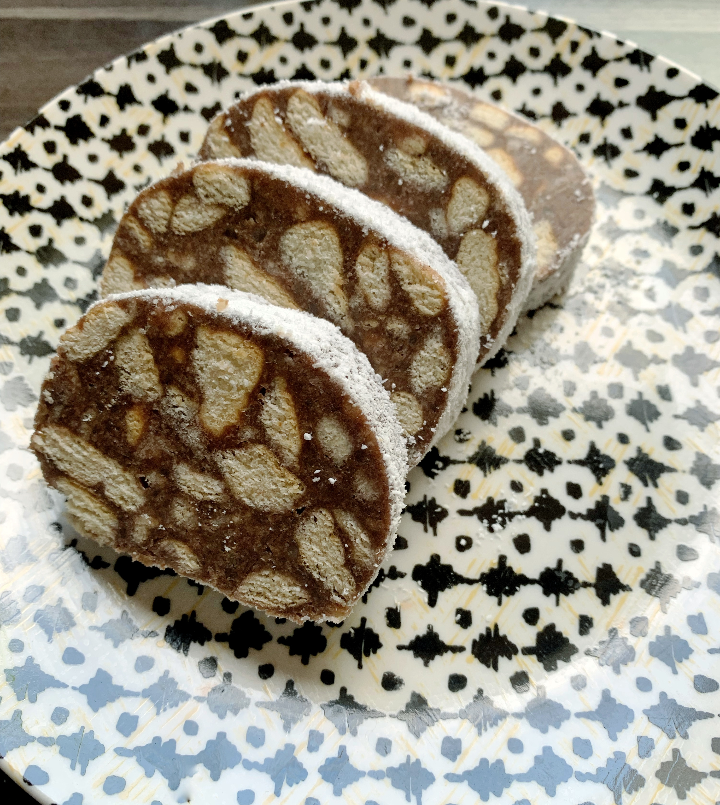

Biscuit Salami

Description:
Romanian childhood dessert recipe.
Ingredients:
- Butter biscuits 250 g
- Butter 75 g
- Milk 100 g
- Sugar 50 g
- Cacao powder 1 tbsp
- Hazelnut mix 75 g
- Rum aroma 1 tsp
Steps:
-
Break the butter biscuits into a bowl, with your hands into smallish
pieces.
-
In a pan, heat the milk with the butter and mix well on the heat until
it melts. Then add sugar and cocoa and let it boil. Turn off the heat
and let it cool for 10 minutes, then add the rum essence.
-
The sauce is poured over the broken biscuits. Add the hazelnut mix and
mix well. Let it rest for 5-10 minutes.
-
A food foil is spread on the work table and the biscuit filling is
placed on top of it. Give it a nice shape, then roll the foil tightly
giving it the shape of a salami. Twist the pieces of foil from the
ends and tie well.
-
he biscuit salami are chilled in the fridge, preferably overnight, to
be cut the next day. When unpacking the salami, sprinkle with powdered
sugar. It is best kept cold in the fridge.